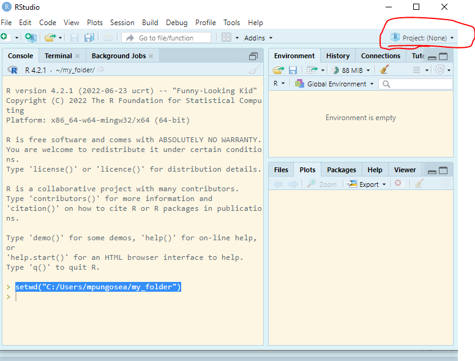
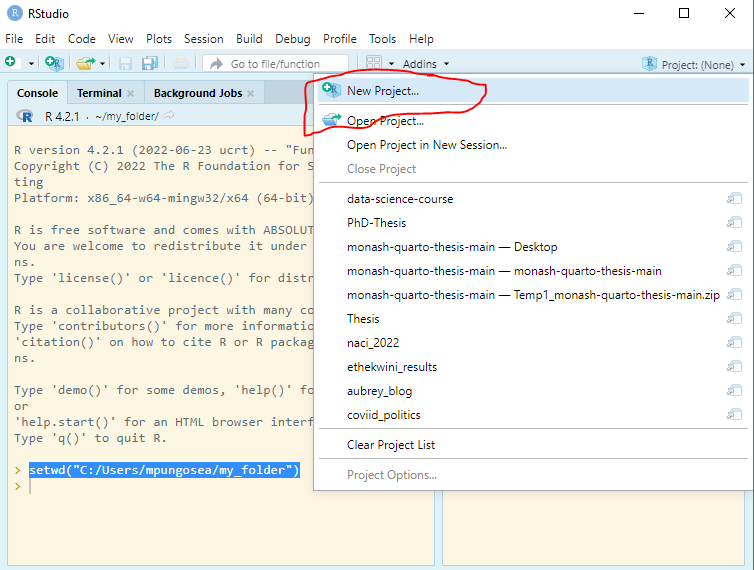
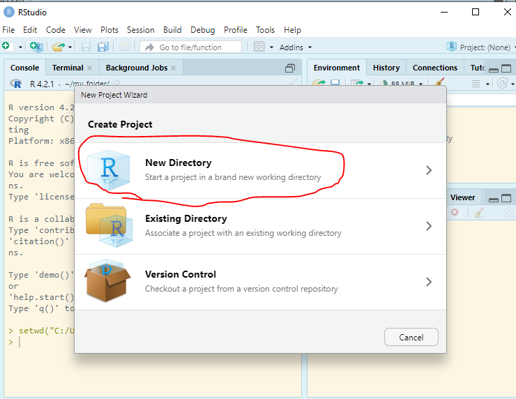
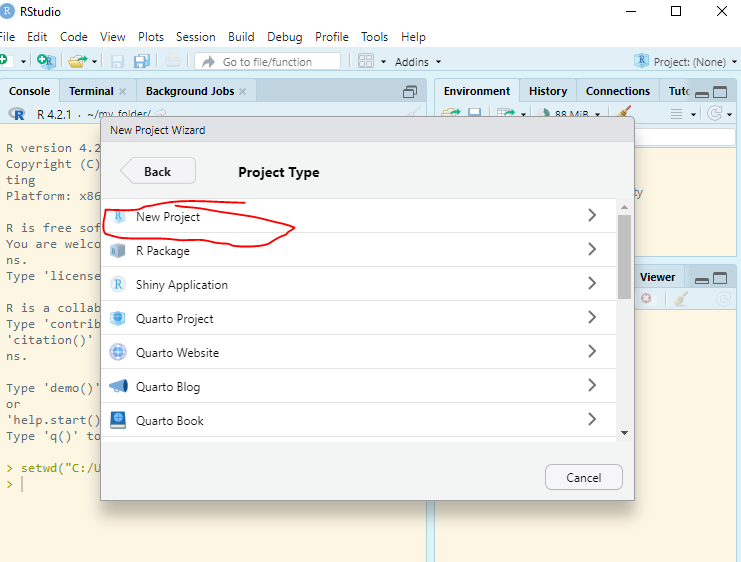
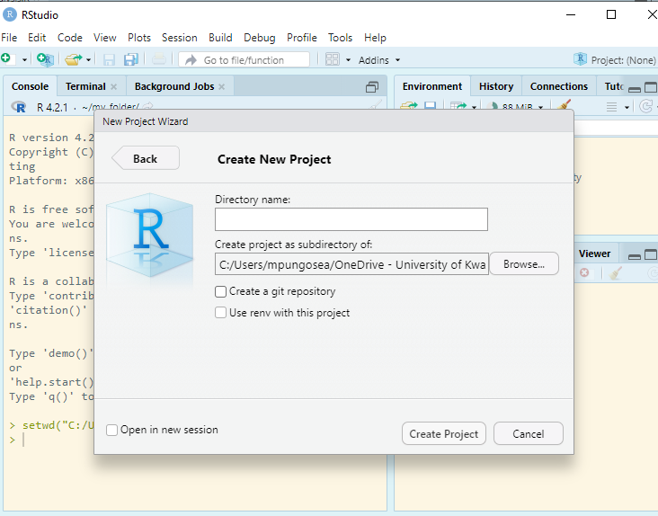
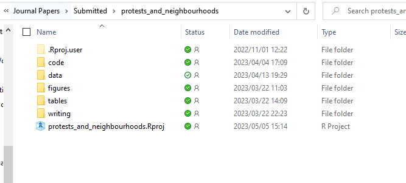
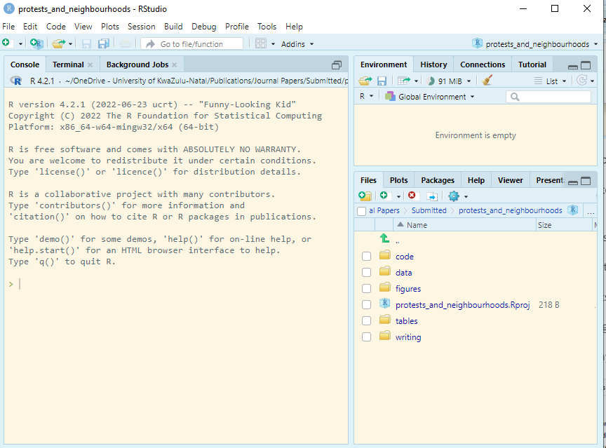

country_code country region population
1 AFG Afghanistan Asia 34.656032
2 ALB Albania Eastern Europe & Eurasia 2.876101
3 DZA Algeria Mid East & North Africa 40.606052
4 AGO Angola Sub-Saharan Africa 28.813463
5 ATG Antigua and Barbuda Caribbean 0.100963
6 ARG Argentina Latin America 43.847430
pop_density GDP epi_score sdg_index
1 53.08341 60.287050 37.74 46.8
2 104.96719 32.669916 65.46 68.9
3 17.04889 565.284000 57.18 68.8
4 23.11179 172.438000 37.44 50.2
5 229.46136 2.121537 59.18 -9999.0
6 16.02207 810.714000 59.30 72.5Importing Data and Reproducible Workflows
All along we have been working with data stored as packages in R or fake data. But most of the time data is stored locally on our computers either as .csv, Excel, .txt, pdf, etc. There are functions to import these data types, both in Base R and external packages. But first you will need to tell R the location of the data.
6.1 Importing data
To import csv, you can use the read.csv() function. In my case I have dataset saved as “epi_data.csv” in the the folder named “data”:
Let us say te same data is saved in as aan Excel workbook with an extension .xlsx, we can use reaedxl package:
Warning: package 'readxl' was built under R version 4.2.2# A tibble: 6 × 8
country_code country region population pop_density GDP epi_score sdg_index
<chr> <chr> <chr> <dbl> <dbl> <dbl> <dbl> <dbl>
1 AFG Afghani… Asia 34.7 53.1 60.3 37.7 46.8
2 ALB Albania Easte… 2.88 105. 32.7 65.5 68.9
3 DZA Algeria Mid E… 40.6 17.0 565. 57.2 68.8
4 AGO Angola Sub-S… 28.8 23.1 172. 37.4 50.2
5 ATG Antigua… Carib… 0.101 229. 2.12 59.2 -9999
6 ARG Argenti… Latin… 43.8 16.0 811. 59.3 72.5There are other arguments that can be added; for example if you data is on sheet number 2 of Exel workbook, you will add an sheet = 2 argument.
You can import data from other statistical software as well:
Read STATA files: STATA data files end with .dta extensions:
read_dta()fromHavenpackage can import this data typeRead SPPS files: SPSS files end with .sav extension:
read_sav()function, also fromHavencan import it.
R can import other many data types such shapefiles, images, PDFs and data from the web.
6.2 Importing Multiple files
Sometimes there are many files and it would be time consuming to load each file. I will show you the following with instructions
now you have a list with 2 elements. You can extract each element:
country_code country region population
1 AFG Afghanistan Asia 34.656032
2 ALB Albania Eastern Europe & Eurasia 2.876101
3 DZA Algeria Mid East & North Africa 40.606052
4 AGO Angola Sub-Saharan Africa 28.813463
5 ATG Antigua and Barbuda Caribbean 0.100963
6 ARG Argentina Latin America 43.847430
pop_density GDP epi_score sdg_index
1 53.08341 60.287050 37.74 46.8
2 104.96719 32.669916 65.46 68.9
3 17.04889 565.284000 57.18 68.8
4 23.11179 172.438000 37.44 50.2
5 229.46136 2.121537 59.18 -9999.0
6 16.02207 810.714000 59.30 72.5 country continent year lifeExp pop gdpPercap
1 Afghanistan Asia 1952 28.801 8425333 779.4453
2 Afghanistan Asia 1957 30.332 9240934 820.8530
3 Afghanistan Asia 1962 31.997 10267083 853.1007
4 Afghanistan Asia 1967 34.020 11537966 836.1971
5 Afghanistan Asia 1972 36.088 13079460 739.9811
6 Afghanistan Asia 1977 38.438 14880372 786.11346.3 Exporting data
After you have cleaned and prepared your data for analysis, you may want to save cleaned data.
Not that your my path “data/gapminder_cleaned.csv” will be different yours.
##6.4 Setting working directories
When working on a project, it may be important to set a working directory, where all you files are stores: data, code, reports, etc. You can use setwd() function. Let’s say we have a folder with all the files:
-
my_folder
- data
- code
- report
You will need to set a working directory as:
To navigate to a specific file, you will have to use relative paths. You starting path would be “my_folder”. If you want to load data, you would have to navigate to “data” directory:
country_code country region population
1 AFG Afghanistan Asia 34.656032
2 ALB Albania Eastern Europe & Eurasia 2.876101
3 DZA Algeria Mid East & North Africa 40.606052
4 AGO Angola Sub-Saharan Africa 28.813463
5 ATG Antigua and Barbuda Caribbean 0.100963
6 ARG Argentina Latin America 43.847430
pop_density GDP epi_score sdg_index
1 53.08341 60.287050 37.74 46.8
2 104.96719 32.669916 65.46 68.9
3 17.04889 565.284000 57.18 68.8
4 23.11179 172.438000 37.44 50.2
5 229.46136 2.121537 59.18 -9999.0
6 16.02207 810.714000 59.30 72.56.5 Managing reproducible workflows
The problem with the above approach, of setting working directories, is that your directories are local to your computer. We share code with other people: reviewers, team members, etc. We also collaborate with one another. Now imagine that I have “C:/Users/mpungosea/my_folder” as my working directory. Will this work on your computer? NO! In Other instances, you may move files; if you run the code and set the director, R will return an error. This means that your workflows are not reproducible and it is not an efficient way of working.
Enter RStudio Projects. In Projects, we want to keep all the files that were working with and making it easier to navigate directories and share your work. To start a new project, follow these steps:


Inside the project, you can add the follwoing directories/folders:
data: to save all your data files: raw data, cleaned data, analysis data, etc
code: save all your scripts: data cleaning, analysis, etc
outputs: figures, tables, etc
reports: draft reports final reports, etc
bibliogaphy: a bibtex file with the list of references.
In one of my projects, this is how it looks:

Every time you work on the project, you then open the .Rproj file, it will have all the files associated with the project:
